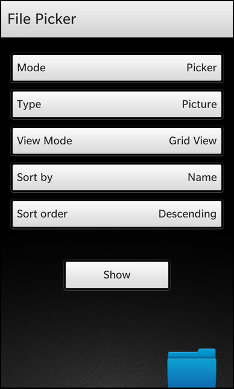

Files:
The File Picker example lets the user configure the properties of a file dialog and open it to select a file for loading or saving.

In this example we'll learn how to use the FilePicker class of the BB10 framework to select a file from the file system. The FilePicker can be configured to either select a file for loading data or to save them. Additionally you can define the view mode, the sort order and criterion of the files and a filter based on mime type or extensions.
The UI of this sample application consists of a couple of DropDown control to configure the various properties of the FilePicker. A 'Show' button let the use open the dialog and a Label at the bottom of the page shows the selected file path.
The DropDown controls are filled with Option objects that represent the possible values for a property. The enums are directly set on their 'value' property, so that the 'selectedValue' property of the DropDown can be used later on.
// The file picker mode selector DropDown { id: pickerMode horizontalAlignment: HorizontalAlignment.Center topMargin: 50 title: qsTr ("Mode") Option { text: qsTr ("Picker") value: FilePickerMode.Picker selected: true } Option { text: qsTr ("Saver") value: FilePickerMode.Saver } Option { text: qsTr ("PickerMultiple") value: FilePickerMode.PickerMultiple } Option { text: qsTr ("SaverMultiple") value: FilePickerMode.SaverMultiple } }
Whenever the user clicks the 'Show' button, the open() method is invoked on the FilePicker object.
// The 'Show' button Button { horizontalAlignment: HorizontalAlignment.Center topMargin: 100 text: qsTr ("Show") onClicked: picker.open() }
The object itself is created as attached object on the main page. Its properties are bound against the 'selectedValue' properties of the various DropDown controls, so whenever the user changes an option, the FilePicker is updated automatically.
attachedObjects: [ FilePicker { id: picker property string selectedFile title: qsTr ("File Picker") mode: pickerMode.selectedValue type: pickerType.selectedValue viewMode: pickerViewMode.selectedValue sortBy: pickerSortBy.selectedValue sortOrder: pickerSortOrder.selectedValue onFileSelected: { selectedFile = selectedFiles[0] } } ]
If the user has selected a file in the FilePicker, the onFileSelected() signal handler is invoked. Inside this method we store the first of the selected files in the custom property 'selectedFile'.
// The result label Label { id: resultLabel horizontalAlignment: HorizontalAlignment.Center topMargin: 30 text: qsTr ("Selected file: %1").arg(picker.selectedFile) textStyle { base: SystemDefaults.TextStyles.BodyText color: Color.White } multiline: true visible: (picker.selectedFile != "") }
This property is used by the result label to update its 'text' property.